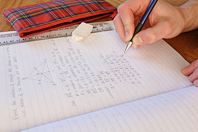

tukaj najdete domače naloge samo za tiste predmete, ki jih imamo kot celoten razred. Ne najdete predmetov kot so matematika, slovenščina ali pa angleščina, saj imamo tukaj vsi različne naloge.
Hvala za razumevanje!
sliko domače naloge pritisnite z desnim klikom, nato izberite možnost 'kopiraj sliko'. Nato odprite program s katerim lahko gledate sliko (microsoft word, slikar,...) in uživajte.
